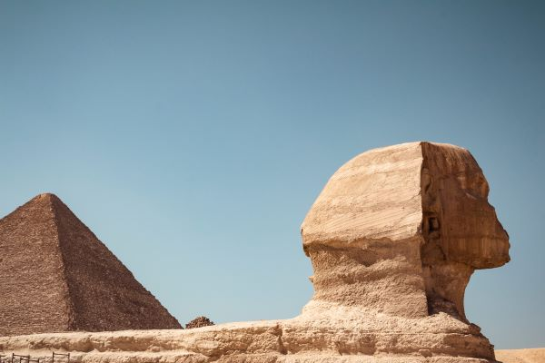
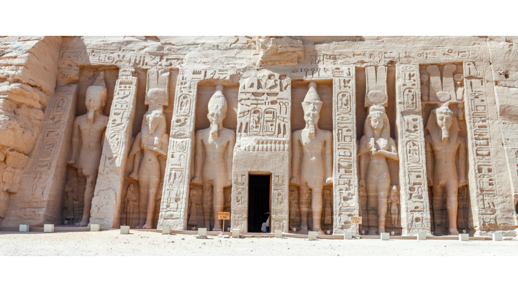
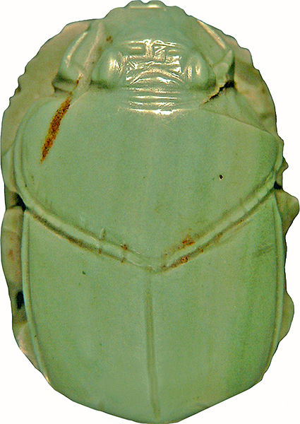

The rosetta stone
The Rosetta stone was made in 196 BCE (late Ancient Egypt). It recites an edict in three different scripts: hieroglyphic, Demotic and Ancient Greek.
A French officer found the stone in 1799 - during Napoleon's campaign into Egypt. After the stone made its way to Europe, scholars used it to decipher the hieroglyphic script.
Tutankhamun's death mask
Tutankhamun only reigned for a dozen years, but he was royally worshipped after he passed away.
Among the wealth of items found in his tomb are sculptures of gods, his golden throne and … Tutankhamun's death mask.
The bust of Nefertiti
e
Nefertiti's bust was made circa 1340 (just before Tutankhamun's reign) and was discovered in the workshop of a well-established sculptor.
The bust is made from a single piece of limestone and has life-size propertions.

Sphinx at Giza
'The Sphinx' is the oldest monumental artifact from Ancient Egypt; it comes from the 26th century BCE.
The monument has gradually eroded over the ages. Still, given its age, the sphinx' condition is remarkably good.
Most scholars believe that the sphinx represents pharaoh Khafre. That would make sense, because one of the three Gizan pyramids is the tomb of the Egyptian king Khafre.
Virtual tour of Ramses III's temple at The valley of kings
Close to the city of Thebes lies a huge valley where many pharaohs and other elite figures were burried. The pharaohs that are most familiar to today's general public lie in the valley. They inculude Tutankhamun and Hatshepsut for instance.
The valley borders a pyramid-shaped landmark: the theban hills (which the Egyptians called 'ta dehent' for 'the peak').
The egyptian name for the valley was "The formiddable and marvelous burrials site of the millions of years of the pharaoh, life, strength, health in the West of Thebes".

Abu Simbel
In the very south of Egypt lies Abu Simbel, shich hosts the temple of Ramses II and the temple of Hathor.
A fun fact about the temple of the goddess Hathor regards its 'alignment with the universe': the sun never ceases to illuminate the statues at the back of Hathor's temple twice a year.
The temple of Karnak
The temple is not only the largest temple of Egypt, it is said to be the 'largest religious building ever constructed'.
Despite its name, the temple of Karnak was a walled area filled with a large array of temples.
Karnak was a popular pilgrim destination, and was in use for over 2000 years.
The Key of Life
The Egyptian word for the key of life is 'Ankh'. The Ankh was a recurring design in Ancient Egypt: it was used in the hieroglyphic script (meaning 'life') and was held by gods and kings on murals and sculptures. Maybe you notice that Tut-ankh-amun's name includes this meaningful word. .
Like Honda and Yamaha, BMW has a particularly respected name in motorracing history.
It is interesting how much the Ankh looks like the Christian cross and the symbol of Tau. While such thoughts cannot be concretized, we can ascertain that the ankh was copied by the Coptic Christians, in their design of the crux ansata.
Uraeus on Tutankhamun's throne
Uraeus means 'rearing snake', and designates the cobras found on sculptures, on murals, at tomb entrances and as decorations. They are a sign of royalty and divinity.
The cobra signifies the presence of the goddess Wadjet, one of Egypt's oldest gods. Her attributes are for fertility, 'foundation' and protector of the land.

Scarab
The scarab was a popular amulet in Ancient Egypt. It represents the desert insect called the Dung Beatle.
Among other things, the scarab stands for divine creation - and not without reason: dung beatles are born out of a fecal ball. Scientists are able to explain that phenomenon today, but the Ancient Egyptians found the occurrence miraculous and divine.